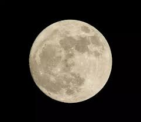

ФАЗИ НА ЛУНАТА

Четири от фазите са достатъчно ясно различими, за да имат имена. Новолуние – Луната е обърната с тъмната си страна към Земята и обикновено не може да бъде видяна, тъй като се намира между Земята и Слънцето. Изключение е случая при слънчево затъмнение, когато Луната засенчва Слънцето. Първа четвърт – дясната половина от лунната повърхност е осветена. Пълнолуние – Когато Земята е между Луната и Слънцето. Целият лунен диск е видим, освен при лунно затъмнение. Трета (последна) четвърт – лявата половина от лунната повърхност е осветена.

Опростено графично представяне на лунните фази чрез емоджита:
🌑 = новолуние
🌒 = изгряващ полумесец
🌓 = първа четвърт
🌔 = растяща луна (наближаваща пълнолуние, млада луна)
🌕 = пълнолуние
🌖 = намаляваща луна (преминала пълнолуние, стара луна)
🌗 = трета (последна) четвърт
🌘 = залязващ полумесец